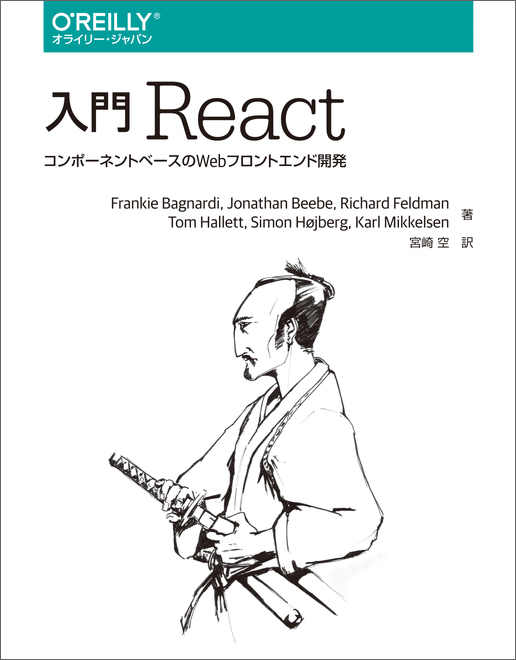

| 著者 |
Frankie Bagnardi、Jonathan Beebe、Richard Feldman、Tom Hallett、Simon Hojberg、Karl Mikkelsen |
| 発行年月日 |
2015年04月 |
| ページ数 |
280 |
| 内容 |
Facebookが開発したJavaScriptライブラリ「React」の解説書。本書では、サンプルアプリケーションを用いてReact.jsのすべての側面を解説します。「第I部 基礎」でReactコンポーネントの作成と合成を学び、Reactの基本的な使い方を理解します。「第II部 応用」ではワンランク上のコンポーネント作成について学びます。「第III部 ツール」ではReactと共に使用して堅牢なアプリケーションを実装するためのツールについて学びます。最後の「第IV部 実践」では大規模なアプリケーション開発に必要な知識やWeb以外のユースケースについて解説します。読者はコンポーネントベースの最新のフロントエンド開発についての体系的な知識と技術を身につけることができます。日本語翻訳版の本書ではReactの開発環境の構築手順とAPIリファレンスを巻末付録として収録。 |